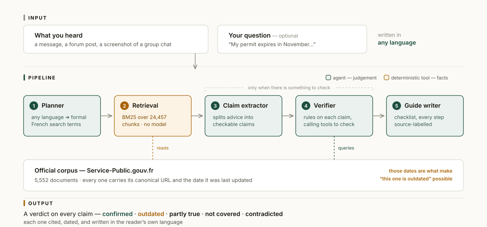

Every international student in France has a senior who helped them.
That advice is generous. It’s specific.
And it’s usually from last year.
Checks the paperwork advice international students pass around against dated official French sources — and tells you exactly what changed.

Green — agents make judgements. Amber — deterministic code supplies facts.
445,000
international students in France, 2024–25
Almost all of them get through this
on hearsay.
github.com/alineyyy/Hearsay
MIT licence · built with AWS Strands Agents on Amazon Bedrock
Official data: Service-Public.gouv.fr / DILA · Licence Ouverte 2.0 (Etalab)